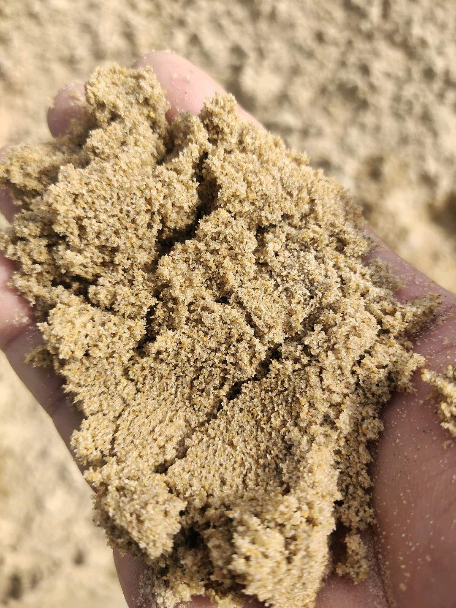

2026-11-05
San Antonio Concrete Specs Keep GGBFS in the SCM Mix
An official municipal construction addendum retains Grade 100 or 120 GGBFS among accepted supplementary cementitious materials, highlighting the controls needed to turn specification access into dependable use.
圣安东尼奥混凝土规范继续将 GGBFS 纳入 SCM 体系
一份官方市政工程补遗继续把 Grade 100 或 120 的 GGBFS 列为可接受的补充性胶凝材料，凸显材料从“规范允许”走向“可靠使用”所需的控制条件。

The City of San Antonio Finance Department's Procurement Division issued Addendum 4 for the Texas A&M University Area Streets Phase 2 project on 30 October 2026. The attached concrete specifications list GGBFS concrete specification requirements alongside fly ash, ultra-fine fly ash, silica fume and metakaolin. GGBFS must conform to TxDOT DMS-4620 and be Grade 100 or 120.
1. Specification access starts with a defined material class
The document does not treat all slag as interchangeable. It identifies ground granulated blast-furnace slag, names the governing material specification and defines acceptable grades. That distinction matters throughout procurement: GBFS is the granulated feedstock, while GGBFS is the ground product supplied for cementitious use. Buyers and suppliers need the same terminology, test basis and acceptance limits before pricing or delivery planning begins.
2. Approved sources and handling remain part of compliance
The specifications call for cementitious materials from TxDOT-prequalified sources unless sampling and testing are requested for approval. They also require cement, SCMs and mineral filler to be kept in weatherproof enclosures that prevent dampness or moisture absorption. These provisions show that a compliant grade alone is not enough: source status, representative evidence and storage discipline remain connected to material acceptance.
3. Batching control turns an SCM option into repeatable concrete
The document treats cement plus SCM as the cementitious system when supplementary materials are used. It also specifies separate weighing controls for cement and SCMs. For project teams, this makes mix design, dosage accuracy, moisture protection and traceable delivery records operational requirements rather than paperwork afterthoughts. The inclusion of several SCM types expands options, but each material still needs project-specific qualification and controlled use.
Takeaway: San Antonio's specification is a practical demand-side signal for GGBFS: public works can recognize slag-based SCMs while maintaining clear grade, source, storage and batching requirements. For the supply chain, the opportunity lies in delivering material and documentation as one controlled package. Source: City of San Antonio Addendum 4, dated 30 October 2026.
圣安东尼奥市财政局采购部门于 2026 年 10 月 30 日发布 Texas A&M University Area Streets Phase 2 项目的第 4 号补遗。随附混凝土规范将GGBFS 混凝土规范要求与粉煤灰、超细粉煤灰、硅灰和偏高岭土并列，其中 GGBFS 必须符合 TxDOT DMS-4620，并达到 Grade 100 或 120。
1. 进入规范体系，首先要明确材料类别
文件没有把所有“矿渣”视为可互换材料，而是明确写出磨细粒化高炉矿渣、适用材料规范和可接受等级。这一区分贯穿采购全过程：GBFS 是粒化原料，GGBFS 则是用于胶凝体系的磨细产品。报价或安排交付之前，买卖双方需要统一术语、检测依据和验收限值。
2. 合格货源与储存管理仍是合规组成部分
规范要求胶凝材料来自 TxDOT 预审合格来源；否则，需要申请取样和检测以获得批准。文件还要求水泥、SCM 和矿物填料存放在防风雨设施内，避免受潮或吸湿。这说明，仅满足等级并不足够，货源资格、代表性证据和储存纪律仍与材料验收直接相连。
3. 配料控制让 SCM 选项转化为稳定混凝土
当使用补充性胶凝材料时，文件把水泥与 SCM 共同视为胶凝材料体系，并对水泥和 SCM 的独立称量提出控制要求。对项目团队而言，配合比、计量精度、防潮和可追溯交付记录都属于运行要求，而不是事后补做的文件。多类 SCM 被纳入规范扩大了材料选择，但每种材料仍需完成项目针对性认证并受控使用。
结论：圣安东尼奥的规范为 GGBFS 提供了一个务实的需求侧信号：公共工程可以认可矿渣类 SCM，同时坚持清晰的等级、货源、储存与计量要求。对供应链而言，机会在于把合格材料与完整文件作为一个受控交付包提供。来源：圣安东尼奥市第 4 号补遗，日期为 2026 年 10 月 30 日。